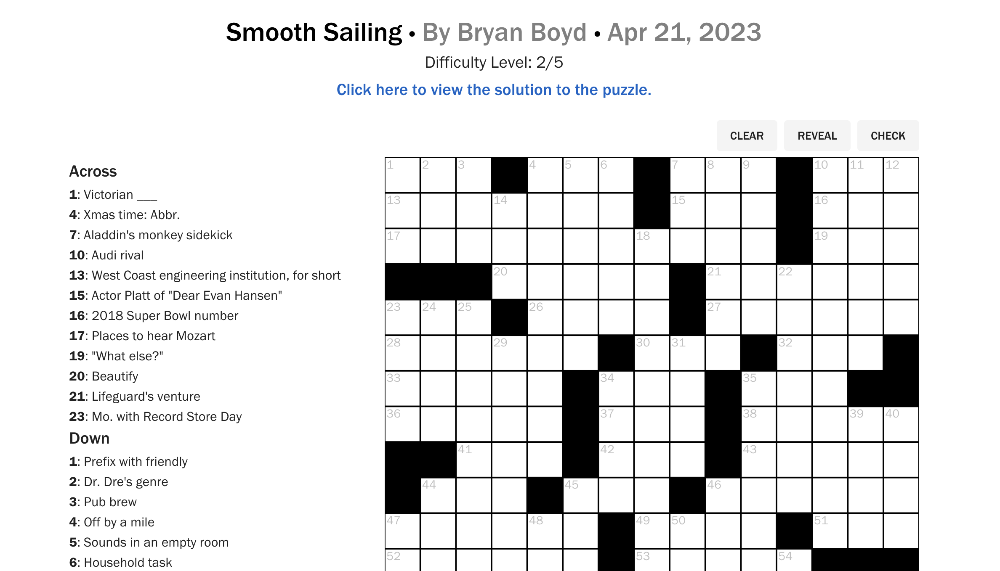
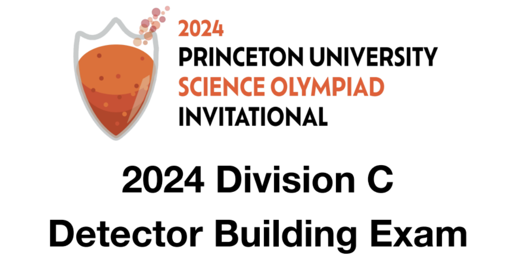

Hi, my name is Bryan and I am a 2nd year graduate student at Duke University conducting research in the Labratory for Intelligent Systems Technology in the Department of Civil and Environmental Engineering. I am studying both Civil and Electrical Engineering, namely application of IoT systems and machine learning in civil engineering. I did my undergraduate at Princeton University where I graduated summa cum laude in Civil Engineering (structural focus) with a minor in Computer Science. This website hosts some of my current and past research, projects from graduate school, and some passion projects! Clicking on each bubble will lead you to the corresponding code or publication.
Research

Projects
Fun Stuff
Crossword Puzzles
Over the past years I have published many crossword puzzles in The Daily Princetonian, and served as an assistant Puzzles Editor during my junior and senior year. I am currently working on more crosswords to submit to various newspapers, and hopefully one day the NY times!
Science Olympiad Tests
Throughout college I have volunteered at many Princeton University Science Olympiad competitions, and have written exams for that competition as well as the MIT invitational, UT Austin invitational and Texas regional competitions, in events like Sounds of Music and Detector Building.
